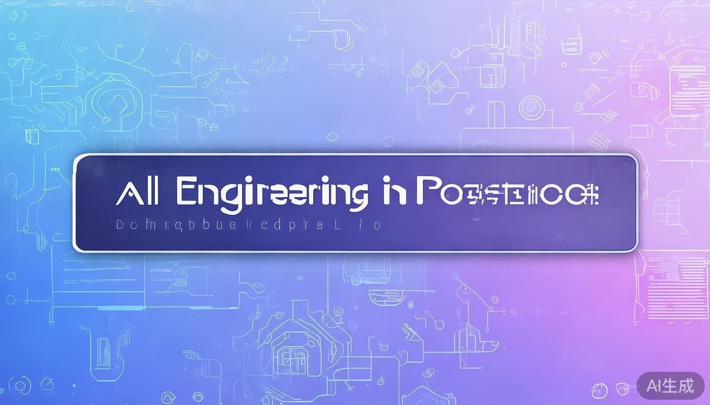

提示词工程实战：把 AI 用出十倍效果
很多人用了半年 AI，效率还停留在「复制一句话问一句」的水平。差距不在工具，而在你怎么跟 AI 说话。提示词工程（Prompt Engineering）是一套把模糊需求翻译成 AI 能精准执行指令的方法论——它不是玄学咒语，而是一门可以迭代的工程。
一、提示词到底是什么
要理解提示词工程，先要理解大模型是怎么「思考」的。Google 在 2024 年发布的《Prompt Engineering》白皮书中开宗明义：大语言模型本质上是一个预测引擎——它读取你输入的文本，基于训练数据预测「下一个最可能出现的词」。你给的信息越完整、结构越清晰，它的预测就越贴合你的真实意图。
所以提示词工程，就是通过精心设计输入，引导这个预测引擎产出更准确、更相关、更有用结果的过程。它和「微调（Fine-tuning）」不同：微调要改模型权重、成本高、周期长；而提示词工程只改输入文本，几乎零成本、即时生效。Anthropic 在官方指南中甚至建议：先用提示词工程做到极致，再考虑微调。对绝大多数人和场景，提示词工程已经足够。
Google 白皮书还强调了一个关键认知：提示词工程不是随手写几句，而是一套持续迭代的工程方法。它包含六个环节——明确任务与目标、设计初始提示、配置模型参数、观察输出、根据结果调整、在产品中维护。同一段提示，在不同模型版本或不同温度参数下，表现可能完全不同。这也意味着：提示词需要被当作一种「资产」来管理。
这也是为什么同样一个问题，有人得到的答案能直接用、有人得到的答案却像废话——差距几乎全在前端这几行提示词上。把提示词工程练好，往往不需要换更贵的模型、也不需要会写代码，就能把 AI 的产出质量提升一个数量级，这正是本文想说的「十倍效果」。
一个好提示的六个构件
把各家官方指南（OpenAI 六策略、Anthropic 七技巧、Google 白皮书）归纳起来，一个高质量提示通常由六个构件组成：角色、任务、上下文、格式、示例、约束。它们的关系可以用下面这张图来理解。
下一部分，我们就逐一拆解这六个构件怎么写，以及为什么有效。
二、六大核心技巧

1. 角色（Role）：给 AI 一个身份
在系统提示或开头告诉模型「你是谁」，能显著聚焦它的语气、专业视角和知识边界。Google 白皮书称之为 Role Prompting，Anthropic 称之为在 System Prompt 中设定角色。哪怕只是一句话，也会有明显差别：
- 模糊：「写一段产品介绍。」
- 有角色：「你是一名有 10 年经验的消费电子类资深文案，为这款降噪耳机写一段 150 字的小红书风格卖点介绍。」
2. 任务（Task）：用明确的动词说清目标
OpenAI 把「写清晰的指令」列为六策略之首。模型读不懂你的心思——你越具体，它猜错的概率越低。不要说「写点东西」，要说「为一篇关于远程办公的文章，写 3 个公众号标题，每个不超过 20 字，突出效率提升」。明确指出动词（写 / 总结 / 翻译 / 分类 / 提取）、交付物形态和衡量标准。
3. 上下文（Context）：补足背景、受众与用途
Anthropic 把「补充上下文」列为高优先级技巧：告诉模型这段输出的用途、面向谁、处于什么工作流，它会理解得更准。比如「这是给公司 CEO 看的周报摘要，他只关心成本和风险，请用高管视角、避免技术术语」。
4. 格式（Format）：指定输出结构
OpenAI 建议「通过示例明确表达期望的输出格式」，Google 白皮书里的 System Prompting 也常用来强制 JSON 等结构化输出。与其让模型自由发挥，不如直接规定：以 Markdown 表格返回、字段包含「标题 / 钩子 / 理由」，或以 JSON 返回。
比如要让模型返回结构化数据，可以写：「只返回大写情感标签，可选 POSITIVE / NEGATIVE / NEUTRAL，不要任何解释文字。」这样下游程序才能稳定解析，也避免了模型在答案前后加一堆啰嗦铺垫。
5. 示例（Examples）：少样本是最稳的捷径
Anthropic 把示例称为「最可靠的引导方式之一」，即 Few-shot / Multishot Prompting；Google 白皮书也反复强调 few-shot（常见 3–5 个示例）的价值。示例能一举定下格式、语气和结构，尤其适合分类、结构化抽取、格式转换等任务。一个小技巧：在少样本分类中，各类别的出现顺序最好打乱，避免模型依赖列表顺序而非内容本身做判断。
6. 约束（Constraints）：划清边界
约束是任务的「护栏」：字数上限、禁止事项、必须包含的要素等。OpenAI 还特别提醒——与其只说「不要做什么」，不如明确「要做什么」（instructions over constraints）。例如不要写「不要写得太长」，而是写「用 3 到 5 句话描述」。
三、结构化提示词模板
把上面六个构件拼起来，就得到一个可复用的「万能骨架」。把它存成模板，每次只替换花括号里的变量，效率和一致性都会大幅提升。下面这个模板可以直接复制使用：
你是一位{角色}，拥有{年数}年{领域}经验。
# 背景
{任务背景、目标受众、使用场景}
# 任务
{用明确的动词描述要做什么，例如：为一篇关于远程办公的文章写 3 个标题}
# 输出格式
{指定结构，例如：以 JSON 返回，字段含 title、hook、reason}
# 示例（可选）
输入：……
输出：……
# 约束
- {限制1，如字数不超过100字}
- {限制2，如不使用专业术语}
- {限制3，如必须包含行动号召}需要提醒的是，模板不是死板的填空。简单任务用一两行即可，复杂任务才需要把六个构件都填上。判断标准很简单：如果第一次跑出来的结果你不满意，就对照这六个构件逐一检查——缺角色就加角色，格式乱就补示例，跑偏了就加约束，直到输出稳定可用。
吴恩达（Andrew Ng）与 OpenAI 的 Isa Fulford 在 DeepLearning.AI 的《ChatGPT Prompt Engineering for Developers》课程中，把写有效提示归纳为两个关键原则：一是「清晰具体地写指令」，二是「给模型思考时间」，并强调提示词要迭代开发——先零样本跑通，再看结果逐步加角色、加示例、加约束。这套思路和上面模板完全契合。
四、思维链（CoT）与少样本
当任务涉及推理、计算或逻辑判断时，光有清晰指令还不够，得让模型「把思考过程说出来」。这就是思维链（Chain of Thought, CoT）。
CoT 来自 Jason Wei 等人在 NeurIPS 2022 发表的论文《Chain-of-Thought Prompting Elicits Reasoning in Large Language Models》。核心发现是：在提示中给模型几个「包含中间推理步骤」的范例，模型就会学会先一步步推理、再给最终答案。论文里有个经典例子——食堂苹果题：直接问，模型容易算错；但给它「原有 23 个 用掉 20 剩 3 又买 6 得 9」的推理示范后，准确率显著提升。论文报告，仅用 8 个 CoT 范例提示 PaLM 540B，就在 GSM8K 数学应用题基准上达到当时最优。
CoT 还有两个常见延伸。其一是 Self-Consistency（自一致性）：让模型对同一个问题生成多条推理路径，再投票选出最常见的答案，可靠性更高；其二是 Tree of Thoughts（思维树）：让模型同时探索多条推理分支，适合需要大量探索的复杂决策。Google 白皮书把它们和 ReAct（推理 + 调用外部工具）一起列为进阶技法，用于更复杂的 Agent 式任务。
零样本、少样本、思维链怎么选
- Zero-shot：只给任务描述，不加示例。适合翻译、简单分类等模型本就会的任务，但不够稳定。
- One-shot / Few-shot：给 1 个或 3–5 个示例，引导格式与风格。Google 白皮书称这是「最重要的实用手段」。
- Chain-of-Thought：在少样本基础上，让每一步都展示推理。适合数学、逻辑、需要解释的任务。
实战中，可以直接在提示末尾加一句「请一步步思考（Let's think step by step）」，或像下面这样给出带推理过程的范例：
# 少样本 + 思维链模板
请参考下面的示例，一步一步思考后再给出答案。
示例1：
问题： Roger 有 5 个网球，又买了 2 罐，每罐 3 个，他现在有几个？
思考： Roger 原有 5 个。2 罐每罐 3 个共 6 个。5+6=11。
答案： 11
示例2：
问题： 食堂原有 23 个苹果，用掉 20 个做午餐，又买了 6 个，现有几个？
思考： 原有 23 个，用掉 20 剩 3 个，又买 6 个，3+6=9。
答案： 9
现在请回答：
问题： {你的问题}
思考：
答案：五、常见错误与调优
即使知道技巧，新手仍会反复踩坑。对照下面这些常见错误，看看你中了几条：
- 太笼统：只写「写点东西」「分析一下」，模型只能瞎猜。改成带角色、任务、格式、约束的清晰指令。
- 只说不要什么：写「不要写太长、别太正式」，模型仍不知道你要什么。改成「用 3 句话、口语化」。
- 一次塞太多任务：让模型同时总结、翻译、写诗、做表，结果每项都潦草。复杂任务先拆分（OpenAI 策略三），再逐段拼装。
- 不给示例：对格式敏感的任务，缺示例就靠模型自由发挥。补 3–5 个 few-shot 示例立竿见影。
- 忽略参数：做事实抽取、问答时把温度（temperature）设得很高，输出变随机。OpenAI 建议此类任务用 temperature=0。
- 不迭代：写一次不满意就换话题。正确做法是把它当工程：跑通 看短板 加角色 / 示例 / 约束 再测。
关于参数，还有一个常被忽略的点：推理类模型（如 o 系列）与普通 GPT 模型的提示写法不同——对推理模型应更简洁、直接给任务，过度拆解步骤反而可能干扰它的内部推理。OpenAI 在最佳实践文档中专门区分了这两类模型的写法，实际使用时值得对照参考。
把提示当作「需要维护的配置资产」
Google 白皮书特别提醒：模型会更新、训练数据会变，旧提示可能随时间失效。因此要把提示当作一类配置资产来维护，记录四项信息——使用的模型及版本、当时的提示内容、参数设置（温度、Top-P、最大 token）、效果是否达标。OpenAI 的第六个策略「系统性测试变化」也是同一逻辑：用一套固定测试集（评估集）对比改动前后的输出，确认改动真的带来整体提升，而不是在个别例子上碰巧变好。
资料来源
- OpenAI，《Prompt engineering》（官方指南），platform.openai.com，2023–2024，https://platform.openai.com/docs/guides/prompt-engineering
- OpenAI Help Center，《Best practices for prompt engineering with the OpenAI API》，2024，https://help.openai.com/en/articles/6654000-best-practices-for-prompt-engineering-with-the-openai-api
- Anthropic，《Prompting best practices / Prompt engineering》（官方文档），docs.anthropic.com，https://docs.anthropic.com/en/docs/build-with-claude/prompt-engineering
- Lee Boonstra（Google），《Prompt Engineering》白皮书，经 Kaggle 发布，2024，https://www.kaggle.com/whitepaper-prompt-engineering
- Andrew Ng、Isa Fulford（OpenAI / DeepLearning.AI），《ChatGPT Prompt Engineering for Developers》短课程，2023，https://www.deeplearning.ai/short-courses/chatgpt-prompt-engineering-for-developers/
- Jason Wei、Xuezhi Wang、Dale Schuurmans 等，《Chain-of-Thought Prompting Elicits Reasoning in Large Language Models》，NeurIPS 2022，arXiv:2201.11903，https://arxiv.org/abs/2201.11903
出处声明：本页内容为白驹全局大脑原创，或已标注引用来源；改编内容遵循原始项目许可证（如 MIT / CC），不侵犯原作者权益。若引用内容涉及版权问题，请联系我们更正。